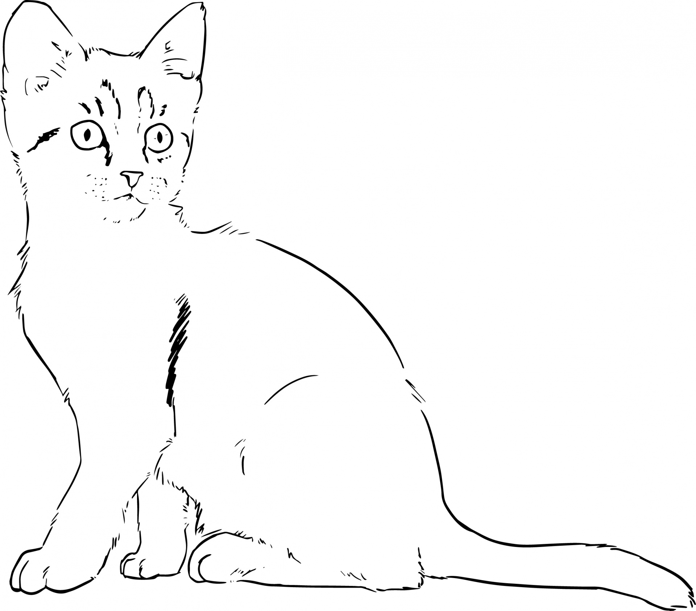

Usefulness of Cats
Longhair, also called Persian, breed of domestic cat noted for its long, soft, flowing coat. Long-haired cats were originally known as Persians or Angoras. These names were later discarded in favour of the name longhair, although the cats are still commonly called Persians in the United States. The longhair, a medium-sized or large cat with a cobby (stocky), short-legged body, has a broad, round head, a snub nose, and a short, heavily haired tail. The large, round eyes may be blue, orange, golden, green, or copper-coloured, depending on the colour of the cat. The soft, finely textured coat forms a heavy ruff about the neck.
The longhair is bred in a number of colour varieties. The solid, or self, colours are white, black, blue, red, and cream. Patterned coats include shaded silver and black (smoke); silver, brown, blue, or red with darker markings (tabby); white finely ticked with black (chinchilla); cream, red, and black (tortoiseshell); calico, or tortoiseshell and white; blue-gray and cream intermingled (blue cream); and bicoloured.
The colours of tortoiseshells, calicos, and blue creams are genetically linked with the sex of the cat. Almost all are females, and most of the few males are sterile. Blue-eyed white cats may be deaf.
Longhairs with Siamese markings (i.e., pale body and dark face, ears, legs, and tail) are Himalayans, or colourpoints. Similarly marked longhairs with white paws are called Birmans. Peke-faced longhairs have short, pushed-in, Pekingese-like faces.